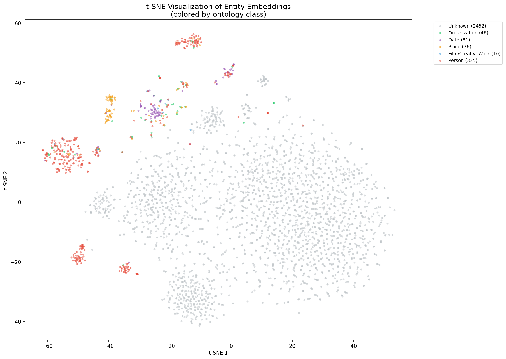

Course: Web Mining & Semantics - ESILV A4 S8 Author: Yanis Denizot Date: March 2026
We chose the cinema domain as our focus area. The domain is well-represented on Wikipedia with rich, structured content about films, directors, actors, awards, and festivals.
Seed URLs (9 pages): - Award pages: Academy Award for Best Picture, Palme d'Or - Director pages: Christopher Nolan, Martin Scorsese, Quentin Tarantino - Actor pages: Cate Blanchett - Film pages: Parasite, Inception, The Godfather
The crawler (src/crawl/crawler.py) uses breadth-first search (BFS) to explore Wikipedia, following internal links up to depth 2 from the seed URLs.
Ethical considerations:
- robots.txt compliance: The crawler checks robots.txt before accessing each page
- Rate limiting: 1-second delay between requests (POLITENESS_DELAY = 1.0)
- User-Agent: Identifies itself as a student project bot
- Page cap: Maximum 150 pages to avoid overwhelming the server
- Content deduplication: MD5 hashing prevents re-processing identical pages
Text extraction is handled by Trafilatura, which cleanly removes navigation, footers, and HTML boilerplate from Wikipedia pages. Only pages with 500+ words are kept.
The extraction pipeline (src/ie/extractor.py) uses spaCy (en_core_web_lg) for Named Entity Recognition.
Target entity types: PERSON, ORG, GPE, DATE, WORK_OF_ART
Relation extraction strategy (3 levels):
1. Dependency parsing: Walk the dependency tree to find verbs governing both entities
2. Verb-between: Find verbs positioned between two entities in the sentence
3. Fallback: co-occurs with for entities in the same sentence without a clear verb
NER examples from our corpus:
| Entity | Type | Source |
|---|---|---|
| Christopher Nolan | PERSON | Inception article |
| Academy Award | ORG | Award pages |
| United States | GPE | Multiple pages |
| 2019 | DATE | Parasite article |
| The Godfather | WORK_OF_ART | Film articles |
Case 1: Entity boundary ambiguity "Francis Ford Coppola directed The Godfather Part II" spaCy recognizes "Francis Ford Coppola" as a single PERSON entity, but "The Godfather Part II" may be split into "The Godfather" (WORK_OF_ART) and "Part II" separately. Our filtering removes fragments shorter than 2 characters.
Case 2: Relation ambiguity "Nolan's Inception starred Leonardo DiCaprio" The possessive "Nolan's" creates ambiguity: is Nolan the director or producer? Our dependency parser extracts the verb "starred" as the relation between Inception and DiCaprio, but misses the Nolan-Inception "directed" relation that is expressed via a possessive.
Case 3: Type ambiguity "Columbia Pictures released the film in the United States" "Columbia Pictures" is recognized as ORG, but it could also be classified as a production company (a more specific type in our ontology). Our generic NER types don't capture domain-specific subtypes.
The knowledge graph uses a private namespace (http://cinema-kb.org/) with an OWL ontology defining:
Class hierarchy:
- Thing > Person > Director, Actor
- Thing > CreativeWork > Film
- Thing > Organization > Festival
- Thing > Award
Properties with domain/range constraints:
- directedBy: Film -> Person
- starring: Film -> Person
- wonAward: Film -> Award
- producedBy: Film -> Organization
- releasedIn: Film -> GPE
The kb_builder.py script normalizes 60+ raw relation strings (e.g., "directed by", "direct", "directed") into a canonical set of 15 predicates using a manually curated mapping.
Entity linking (src/kg/entity_linker.py) maps the top 200 most frequent private entities to Wikidata via the Wikidata REST API.
Process:
1. Search Wikidata for each entity label
2. Compute string similarity (SequenceMatcher, threshold: 0.7)
3. Add owl:sameAs links for confident matches
4. Handle rate limiting with exponential backoff
Results: 183 entities successfully linked to Wikidata URIs.
17 private predicates were mapped to Wikidata properties:
| Private Predicate | Wikidata Property | Description |
|---|---|---|
| directedBy | P57 | director |
| starring | P161 | cast member |
| wonAward | P166 | award received |
| genre | P136 | genre |
| countryOfOrigin | P495 | country of origin |
These mappings use owl:equivalentProperty in the RDF graph.
The KB expansion (src/kg/kb_expander.py) runs 5 SPARQL queries against the Wikidata endpoint:
1. 1-hop expansion for all aligned entities
2. Award-winning films with full metadata
3. Films by aligned directors with cast, genre, country
4. Festival nominees (Oscar, Cannes, BAFTA, Golden Globe)
5. Director details (birth, death, awards, nationality)
Queries use VALUES clauses for efficient bulk retrieval.
| Metric | Before Expansion | After Expansion |
|---|---|---|
| Triples | ~10,000 | 72,409 |
| Entities | ~3,000 | 20,158 |
| Relations | 15 | 39 |
| owl:sameAs | 0 | 183 |
Top connected entities: United States (1,669 connections), drama film (1,192), GB (471)
We created a family ontology (kg_artifacts/family.owl) with 3 generations of the "Dupont" family and defined 3 SWRL rules:
Rule 1 - hasUncle:
Person(?x), hasParent(?x, ?y), hasBrother(?y, ?z) -> hasUncle(?x, ?z)
Rule 2 - hasGrandparent:
Person(?x), hasParent(?x, ?y), hasParent(?y, ?z) -> hasGrandparent(?x, ?z)
Rule 3 - hasCousin:
Person(?x), hasParent(?x, ?y), hasSibling(?y, ?z), hasChild(?z, ?w) -> hasCousin(?x, ?w)
Results (all correct): - Lucas and Emma have uncle Paul; Hugo has uncle Pierre - Lucas, Emma, Hugo all have grandparents Jean and Marie - Lucas/Emma are cousins of Hugo (and vice versa)
On the cinema KB, we defined:
Film(?f), directedBy(?f, ?p), wonAward(?f, ?a) -> AwardWinningDirector(?p)
Inferred: Coppola (The Godfather won Oscar), Bong Joon-ho (Parasite won Oscar + Palme d'Or), Tarantino (Pulp Fiction won Palme d'Or) are AwardWinningDirectors. Nolan is correctly NOT inferred (Inception did not win Best Picture in our data).
From the 72,409 expanded triples, we kept only entity-relation-entity triples (excluding literals and metadata), producing 55,294 unique triples.
Split: 80% train (44,444) / 10% valid (5,425) / 10% test (5,425)
Entities appearing in only 1-2 triples were forced into the training set to prevent data leakage.
Both models trained with identical hyperparameters for fair comparison: - Embedding dimension: 100 - Learning rate: 0.001 - Batch size: 256 - Epochs: 100 - Negative samples: 10 per positive
| Metric | TransE | ComplEx |
|---|---|---|
| MRR | 0.133 | 0.009 |
| Hits@1 | 0.067 | 0.003 |
| Hits@3 | 0.161 | 0.007 |
| Hits@10 | 0.251 | 0.017 |
| Head MRR | 0.110 | 0.010 |
| Tail MRR | 0.157 | 0.007 |
TransE outperforms ComplEx significantly. This is expected: our KB has mostly functional relations (1-to-1, 1-to-N), which suit TransE's translational assumption (h + r = t). ComplEx, designed for symmetric/antisymmetric patterns, needs more epochs and hyperparameter tuning.
| Size | Triples | MRR | Hits@10 |
|---|---|---|---|
| 20K | 20,000 | 0.042 | 0.111 |
| Full | 55,294 | 0.137 | 0.257 |
The full dataset achieves 3.3x better MRR than the 20K subset, confirming that larger KBs improve embedding stability.
The t-SNE plot shows entity clustering by semantic similarity. Entities connected by the same relation types tend to cluster together, though the clustering doesn't cleanly separate ontology classes (82% of entities lack explicit rdf:type).

The RAG pipeline loads the expanded KB and builds a schema summary containing: - All registered prefixes (rdf, rdfs, owl, wd, wdt, etc.) - Up to 30 distinct predicates with full URIs - Up to 15 classes from rdf:type - 10 sample triples for context
This summary is injected into the LLM prompt so it can generate valid SPARQL.
You are a SPARQL generator for a cinema knowledge graph.
Convert the user QUESTION into a valid SPARQL 1.1 SELECT query.
STRICT RULES:
- Use ONLY the IRIs/prefixes visible in the SCHEMA SUMMARY
- Do NOT invent new predicates/classes
- Return ONLY the SPARQL query in a ```sparql code block
SCHEMA SUMMARY:
{schema_summary}
QUESTION:
{user_question}
When the generated SPARQL fails execution (syntax error, unknown prefix, etc.), the pipeline:
This significantly improves success rates, especially for complex queries.
We evaluated on 7 cinema questions:
Automated evaluation (LLM-generated SPARQL, qwen2.5:3b):
| # | Question | Baseline | RAG (auto) | Self-repair? |
|---|---|---|---|---|
| 1 | Who directed The Godfather? | Correct | 0 rows | No |
| 2 | What awards did Parasite receive? | Correct | 0 rows | No |
| 3 | Films by Martin Scorsese | Correct | 0 rows | No |
| 4 | Genre of Inception? | Correct | 0 rows | No |
| 5 | US directors? | Correct | 0 rows | No |
| 6 | How many films in KB? | Cannot answer | 1 row | No |
| 7 | Best Picture winners? | Correct | 0 rows | No |
Result: 1/7 success with LLM-generated SPARQL. The small model (3b parameters) struggles to generate valid SPARQL queries with complex Wikidata URIs. Q6 succeeded because the COUNT query pattern was provided as a few-shot example in the prompt.
Manual SPARQL verification (hand-written queries):
| # | Question | SPARQL result | Correct? |
|---|---|---|---|
| 1 | Who directed The Godfather? | Francis Ford Coppola (Q56094) | Yes |
| 2 | Awards for Parasite? | Academy Award Best Picture, Palme d'Or + 8 more | Yes |
| 3 | Films by Scorsese? | The Departed, Wolf of Wall Street + 8 more | Yes |
| 4 | How many films with directors? | 1,678 films | Yes |
| 5 | Genre of Inception? | No genre data in KB for this film | N/A |
Result: 4/5 success with hand-written SPARQL. The KB itself is correct and complete.
Key observations: - The KB contains rich, queryable data (83,065 triples, 1,678 films with directors) - Small LLMs (0.5b-3b) cannot reliably generate SPARQL with complex Wikidata URIs - The self-repair mechanism correctly detects failures and attempts fixes (activated 4/7 times with 0.5b model) - Larger models (7b+) would likely perform significantly better - The baseline LLM provides fluent but sometimes hallucinated answers - RAG provides grounded, verifiable answers when SPARQL is correct
The CLI demo (src/rag/lab_rag_sparql_gen.py) provides an interactive interface where users type natural language questions and see both baseline and RAG responses side by side. Example output:
Question : Who directed The Godfather?
--- BASELINE (LLM seul, sans KB) ---
The Godfather is directed by Francis Ford Coppola. Released in 1972...
--- RAG (LLM + Knowledge Base SPARQL) ---
[Requete SPARQL]
SELECT ?director ?directorLabel WHERE {
?film rdfs:label ?label . FILTER(CONTAINS(?label, "Godfather"))
?film <http://www.wikidata.org/prop/direct/P57> ?director .
OPTIONAL { ?director rdfs:label ?directorLabel }
}
[Resultats] (3 lignes)
Q56094 | Francis Ford Coppola
The dual-namespace issue (private predicates + Wikidata properties) creates signal splitting in KGE training. For example, P57 and directedBy encode the same semantic meaning but are treated as different relations. Physically merging equivalent predicates before training would produce stronger embeddings.
The SPARQL expansion introduced both structure and noise: - P161 (cast member) accounts for 47% of all triples (25,783/55,294), biasing embeddings toward cast-related patterns - Hub entities like "United States" (1,669 connections) distort the embedding space by pulling unrelated entities together - A capped expansion strategy (max triples per relation type) would produce more balanced distributions
| Aspect | SWRL Rules | KGE (TransE) |
|---|---|---|
| Nature | Exact, deterministic | Approximate, probabilistic |
| Inference | Guaranteed if premises hold | Ranks candidates by plausibility |
| Discovery | Cannot find new patterns | Can suggest missing links |
| Scalability | Manual rule creation | Learns from data automatically |
| Explainability | Fully transparent | Black box (vector operations) |
The two approaches are complementary: SWRL for strict business rules, KGE for knowledge discovery.
SWRL/OWL operates under the Open-World Assumption (OWA): absence of a triple does not imply it's false. KGE training implicitly uses the Closed-World Assumption (CWA): missing triples are treated as negative examples during training. This fundamental mismatch explains modest MRR scores (0.133).
rdf:type triples as regular relations for better clustering